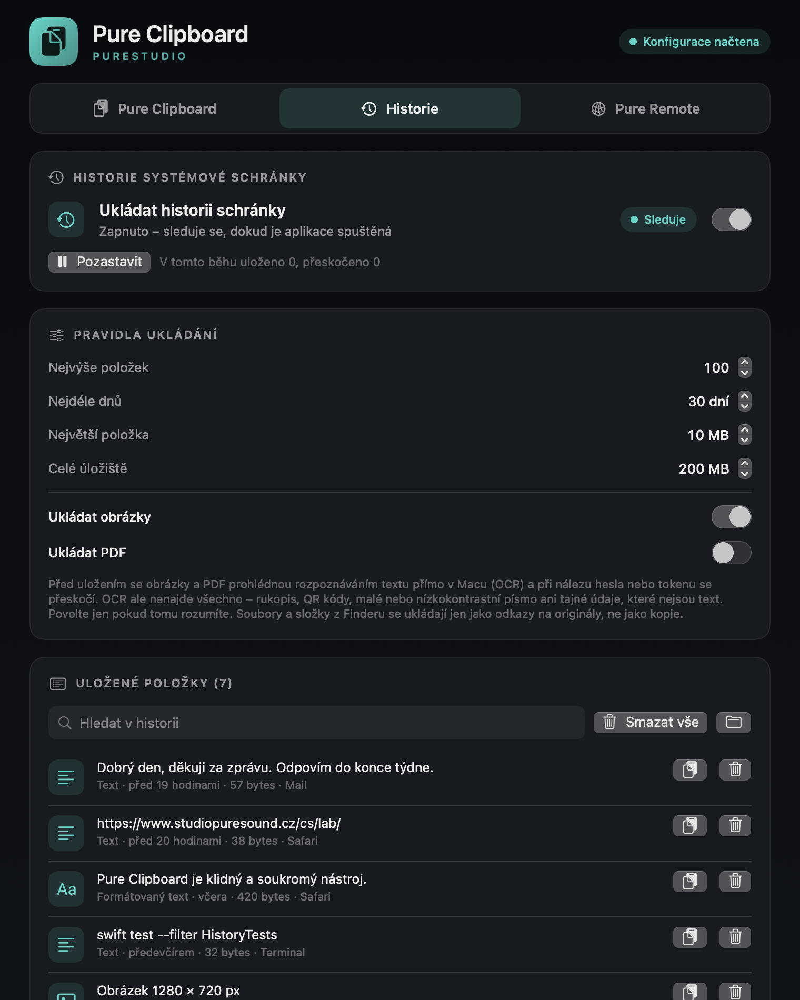
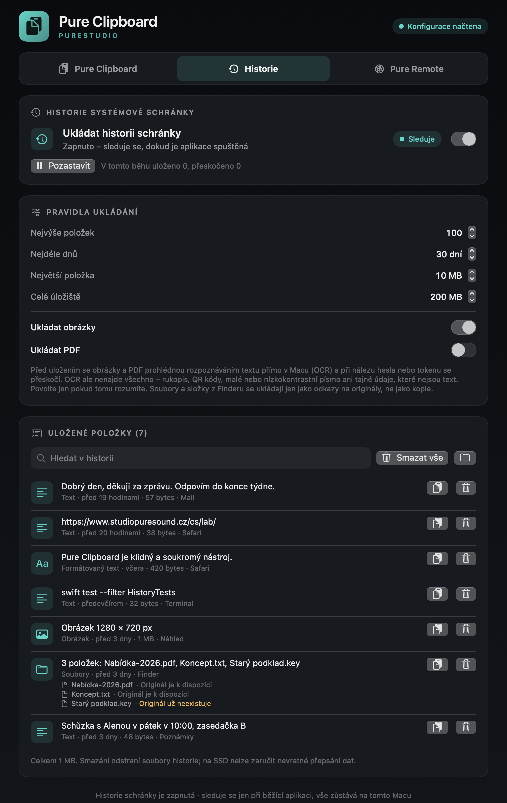
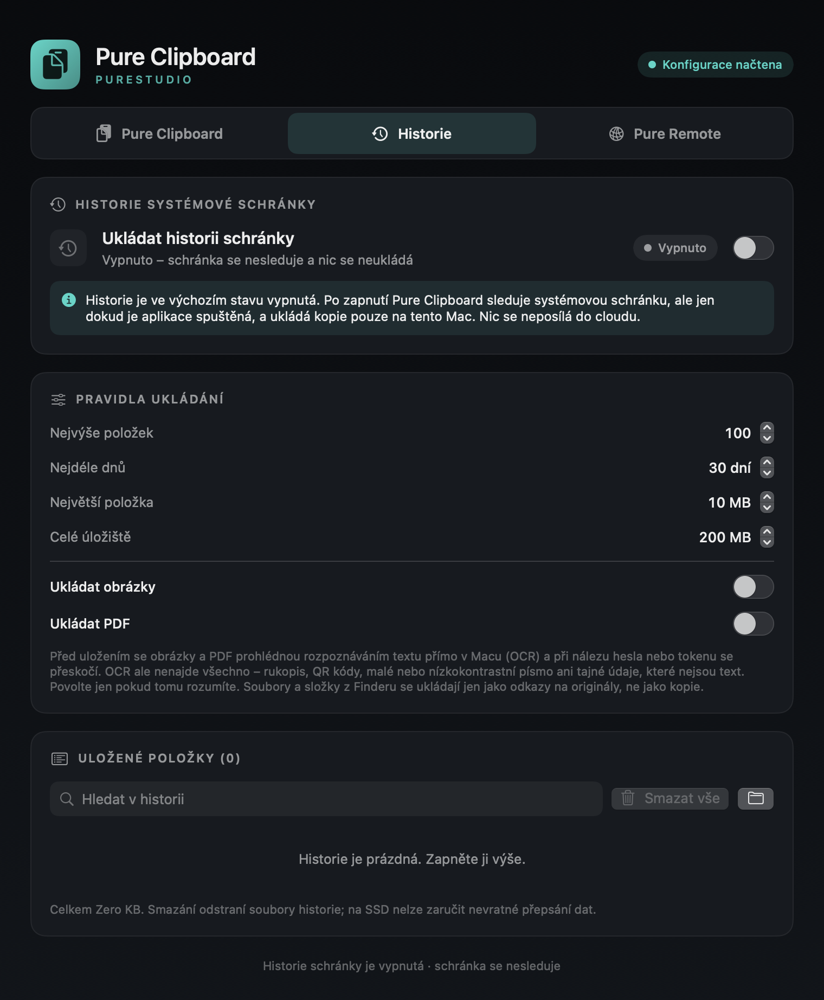
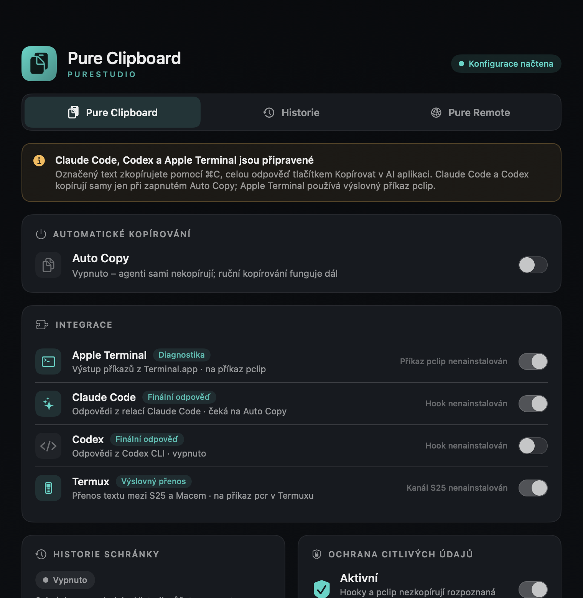

PURE / LAB
Pure Clipboard.
Historie schránky na vašem Macu. Vypnutá, dokud ji nezapnete.
Stažení připravujemeVývoj · v0.7.0Podepsané a notarizované vydání pro Apple Silicon zatím není hotové. Tlačítko ke stažení se objeví, až bude.

Pure Clipboard si pamatuje, co jste kopírovali, a vrátí vám to jedním kliknutím. Je to nativní aplikace pro macOS, bez účtu, bez cloudu a bez analytiky.
Co umí
Historie schránky
Text, formátovaný text, obrázky, PDF a soubory či složky z Finderu, včetně vícenásobného výběru. U souborů se ukládá jen odkaz na originál, ne kopie.
Hledání a obnovení
Najděte položku podle slova, aplikace nebo názvu souboru a jedním kliknutím ji vraťte do schránky. Chybějící originál aplikace srozumitelně označí.
Pod vaší kontrolou
Výchozí limity: 100 položek a 30 dní. Můžete nastavit velikost položky i celého úložiště, historii pozastavit, smazat jednu položku nebo vše.
Přeskakuje citlivé
Obsah označený správcem hesel jako soukromý či dočasný se neukládá. Text se před uložením prověří na hesla, klíče a tokeny.
AI a terminál na váš pokyn
Volitelně zkopíruje finální odpověď Claude Code a Codex CLI nebo výstup příkazu přes pclip. Termux na telefonu přenáší text jen na váš příkaz.
Pure Remote
Přehled spojení Tailscale mezi tímto Macem a vašimi zařízeními. Čte jen místní stav a nic neukládá.
Soukromí
- Historie je ve výchozím stavu vypnutá. Schránka se sleduje až po vašem výslovném zapnutí a jen dokud je aplikace spuštěná.
- Všechno zůstává na tomto Macu v souborech čitelných jen vámi. Obsah ani diagnostika se neposílají do cloudu a aplikace nemá žádný síťový kód.
- Obrázky a PDF se ukládají jen po zvláštním souhlasu. Před uložením je aplikace prohlédne rozpoznáváním textu (OCR) přímo v Macu. OCR nenajde všechno, proto neslibujeme, že obrazem neprojde žádný tajný údaj.
- Ochrana citlivých údajů je pomocník, ne záruka. Při pochybnostech se položka raději nestaví.



Systémové požadavky
- Mac s čipem Apple (Apple Silicon).
- macOS 14 nebo novější. Vyzkoušeno na macOS 27; starší verze zatím nejsou ověřené.
- Intel Macy zatím nejsou podporované.
Instalace
Až bude k dispozici podepsané vydání, instalace bude jednoduchá:
- Stáhněte soubor .dmg a ověřte jeho SHA-256 (hodnota bude uvedena vedle odkazu).
- Otevřete obraz a přetáhněte Pure Clipboard do složky Applications.
- Spusťte aplikaci z Applications. Žádná funkce se nezapne sama.
Dnes existuje jen testovací sestavení podepsané ad-hoc, které není oficiálním stažením.
Časté otázky
Sleduje Pure Clipboard moji schránku?
Jen když zapnete historii, a jen dokud je aplikace spuštěná. Ve výchozím stavu je historie vypnutá a schránka se nesleduje.
Kam se ukládají data?
Do složky ~/Library/Application Support/PureClipboard na vašem Macu. Nic se neposílá na internet.
Ukládají se hesla ze správce hesel?
Ne. Obsah označený jako soukromý nebo dočasný se přeskočí. Text se navíc prověřuje na hesla a tokeny; spolehlivé rozpoznání ale nelze zaručit.
Ukládají se kopie mých souborů?
Ne. Z Finderu se ukládá jen odkaz na originál. Když originál zmizí, aplikace to ukáže.
Jsou obrázky a PDF v bezpečí?
Ukládají se jen po zvláštním souhlasu a po kontrole OCR v Macu. OCR nerozpozná rukopis, QR kódy ani tajné údaje, které nejsou text, takže tuto funkci povolte jen vědomě.
Funguje to na Intel Macu, Windows nebo Androidu?
Ne. Podporovaný je Apple Silicon s macOS 14 nebo novějším. Jiné platformy zatím nejsou ověřené.
Je aplikace notarizovaná?
Zatím ne. Podepsané a notarizované vydání čeká na placený účet Apple Developer. Do té doby se nestahuje z webu.
Změny
v0.7.0
- Historie systémové schránky (vypnutá ve výchozím stavu): text, formátovaný text, obrázky, PDF, soubory a složky jako odkazy.
- Hledání, obnovení do schránky, mazání, pozastavení a limity.
- Ochrana citlivých údajů, respektování označení dočasného obsahu, OCR v Macu pro obrázky a PDF.
v0.6.0
- Termux: přenos textu mezi telefonem a Macem na výslovný příkaz.
v0.5.0
- Pure Remote: přehled provozu Tailscale. Příprava distribuce.
v0.1.0–0.4.0
- Konfigurace, Claude Code, Codex CLI, Apple Terminal (pclip) a ruční kopírování.